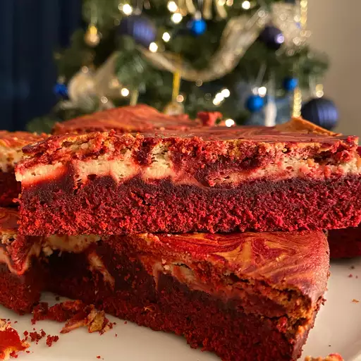

You'll find the full, step-by-step recipe below —
but here's a brief overview of what you can expect when you make red velvet cheesecake brownies:
- Make the brownie batter according to the recipe.
- Set aside ¼ cup of batter, then pour the rest of the batter into a prepared baking dis
- Make the cream cheese filling according to the recipe
- Dollop the filling over the batter. Drizzle the reserved batter over the dollops.
- Drag a knife or skewer through the batter and filling to create swirls.
- Bake the brownies, cool, and cut into pieces.